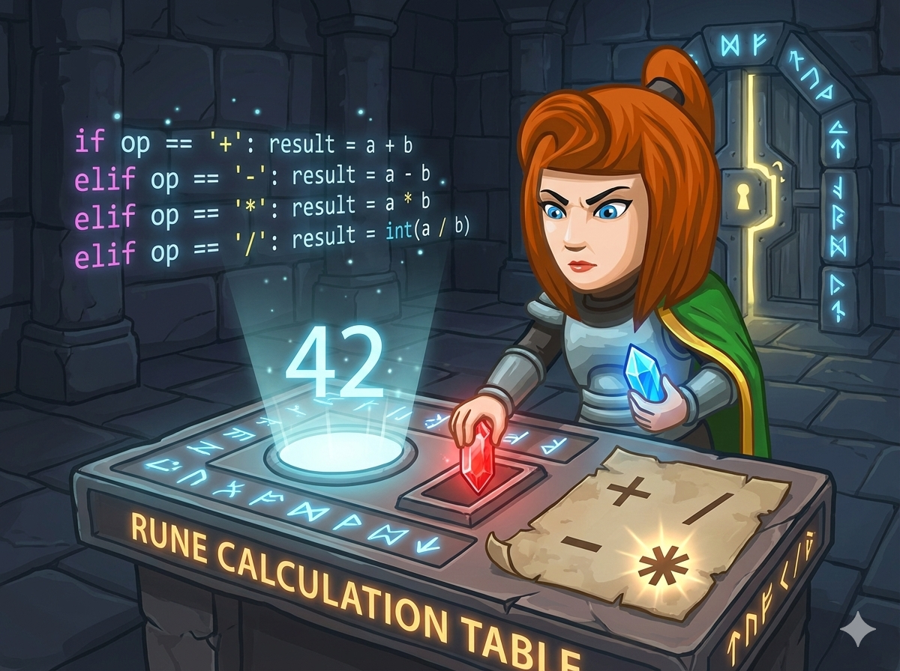

在地牢深处，你发现了一个发光的“符印算台”。 它需要两块 魔晶 (整数 a, b) 和一个 符印 (符号) 才能启动。
符印的规则如下：

在 C++ 中，如果两个操作数都是整数，/ 运算符执行的是 整除。
例如：int a = 5, b = 2; 此时 a / b 的结果是 2，小数部分会被直接丢弃。
C++ 的 switch 语句非常高效，但它有一个重要的限制：
⚠️ 只能用于整数或字符 (char)，不能用于字符串 (string)！
因此，本题读入符号时，必须使用 char 类型变量来存储，才能使用 switch。
在 Python 中，普通的除法 / 总是返回小数（浮点数）。
例如：6 / 2 结果是 3.0。
题目要求输出整数，所以必须使用 双斜杠 //，这叫做“地板除”，它会向下取整。
这是最通用的方法，就像拿着一张清单，一条一条地核对符印。
#include <iostream> using namespace std; int main() { int a, b; string op; // 使用 string 存储符号，方便读取 // 1. 读入两块魔晶(整数)和符印(字符串) cin >> a >> b >> op; // 2. 依次判断符号 if (op == "+") { cout << a + b; // 加法 } else if (op == "-") { cout << a - b; // 减法 } else if (op == "*") { cout << a * b; // 乘法 } else if (op == "/") { cout << a / b; // C++ 整数相除会自动取整（丢弃小数） } return 0; }
注意 switch 只能配合 整数 或 字符(char) 使用，不能用 string！
所以读入符号时，我们需要用 char 类型。它比 if 更快、结构更清晰。
#include <iostream> using namespace std; int main() { int a, b; char op; // ⚠️ 注意：必须用 char (单个字符) 才能用于 switch // 1. 读入数据 cin >> a >> b >> op; // 2. 使用 switch 进行快速匹配 switch (op) { case '+': // 如果是加号 cout << a + b; break; // 🛑 别忘了 break，否则会掉到下一层！ case '-': // 如果是减号 cout << a - b; break; case '*': // 如果是乘号 cout << a * b; break; case '/': // 如果是除号 cout << a / b; break; } return 0; }
最常用的判断方法，适用于所有版本的 Python。
# 1. 读入一行数据并拆分为整数 line1 = input().split() a = int(line1[0]) b = int(line1[1]) # 2. 读入第二行的符号，并去除首尾空格 op = input().strip() # 3. 判断与计算 if op == "+": print(a + b) elif op == "-": print(a - b) elif op == "*": print(a * b) elif op == "/": print(a // b) # ⚠️ 注意：双斜杠 // 才是整数除法，单斜杠 / 是小数除法
Python 3.10+ 这是 Python 的“Switch”写法，结构非常优雅，完美对应 C++ 的 switch。
# 1. 读入数据 a, b = map(int, input().split()) op = input().strip() # 2. 模式匹配 (match-case) match op: case "+": print(a + b) case "-": print(a - b) case "*": print(a * b) case "/": print(a // b) # 同样使用双斜杠进行整数除法